Last updated: 2026-11-18
Checks: 7 0
Knit directory: QC_integration/
This reproducible R Markdown analysis was created with workflowr (version 1.7.2). The Checks tab describes the reproducibility checks that were applied when the results were created. The Past versions tab lists the development history.
Great! Since the R Markdown file has been committed to the Git repository, you know the exact version of the code that produced these results.
Great job! The global environment was empty. Objects defined in the global environment can affect the analysis in your R Markdown file in unknown ways. For reproduciblity it’s best to always run the code in an empty environment.
The command set.seed(20240606) was run prior to running
the code in the R Markdown file. Setting a seed ensures that any results
that rely on randomness, e.g. subsampling or permutations, are
reproducible.
Great job! Recording the operating system, R version, and package versions is critical for reproducibility.
Nice! There were no cached chunks for this analysis, so you can be confident that you successfully produced the results during this run.
Great job! Using relative paths to the files within your workflowr project makes it easier to run your code on other machines.
Great! You are using Git for version control. Tracking code development and connecting the code version to the results is critical for reproducibility.
The results in this page were generated with repository version 36af99f. See the Past versions tab to see a history of the changes made to the R Markdown and HTML files.
Note that you need to be careful to ensure that all relevant files for
the analysis have been committed to Git prior to generating the results
(you can use wflow_publish or
wflow_git_commit). workflowr only checks the R Markdown
file, but you know if there are other scripts or data files that it
depends on. Below is the status of the Git repository when the results
were generated:
Untracked files:
Untracked: data
Untracked: output
Unstaged changes:
Deleted: .gitattributes
Deleted: README.md
Modified: analysis/Ambient_RNA_correction.Rmd
Modified: analysis/Cardiomyocytes_cell_states.Rmd
Modified: analysis/Cell_communication.Rmd
Modified: analysis/Cell_state_annotation.Rmd
Modified: analysis/Clinical_transcriptomic_associations.Rmd
Modified: analysis/DCM_control_transcriptomics.Rmd
Modified: analysis/Endothelial_cells_cell_states.Rmd
Modified: analysis/Fibroblasts_cell_states.Rmd
Modified: analysis/Fibrosis_associations.Rmd
Modified: analysis/Integrative_analysis.Rmd
Modified: analysis/Lymphocytes_cell_states.Rmd
Modified: analysis/Macrophages_cell_states.Rmd
Modified: analysis/Mural_cells_cell_states.Rmd
Modified: analysis/Protein_differential_abundance.Rmd
Modified: analysis/Protein_quality_control.Rmd
Modified: analysis/Pulmonary_pressure_associations.Rmd
Modified: analysis/Supplementary_datasets.Rmd
Modified: analysis/Transcriptional_signatures.Rmd
Modified: analysis/Transcriptomic_variation.Rmd
Deleted: data/Donor_ages.csv
Deleted: data/README.md
Deleted: data/processed/CM/baseline_markers.csv
Deleted: data/processed/CM/enrichment_checkpoints/A_0cbbca75d4f1db681c1775b95efd9126f7e3e7e667b35c109d1caef628e5fd6b.rds
Deleted: data/processed/CM/enrichment_checkpoints/A_84a9db10b602e17aa95fc96f2b404816277b007c1fc1d76ab34afdd05c7ec51d.rds
Deleted: data/processed/CM/enrichment_checkpoints/A_8536fd635fd79f7cd2af4577b1a43188e5fab098aca28c222d73d4548fd9da0e.rds
Deleted: data/processed/CM/enrichment_checkpoints/A_9535c4091945277f0e24c32743c56e93a3987d07504ab8337547c410443118c4.rds
Deleted: data/processed/CM/heatmap_cells.csv
Deleted: data/processed/CM/markers.csv
Deleted: data/processed/DCM_control_GSEA/A_Adipocytes_GSEA_GO.rds
Deleted: data/processed/DCM_control_GSEA/A_Cardiomyocytes_GSEA_GO.rds
Deleted: data/processed/DCM_control_GSEA/A_Endocardial_cells_GSEA_GO.rds
Deleted: data/processed/DCM_control_GSEA/A_Endothelial_cells_GSEA_GO.rds
Deleted: data/processed/DCM_control_GSEA/A_Fibroblasts_GSEA_GO.rds
Deleted: data/processed/DCM_control_GSEA/A_Lymphatic_cells_GSEA_GO.rds
Deleted: data/processed/DCM_control_GSEA/A_Lymphocytes_GSEA_GO.rds
Deleted: data/processed/DCM_control_GSEA/A_Macrophages_GSEA_GO.rds
Deleted: data/processed/DCM_control_GSEA/A_Mast_cells_GSEA_GO.rds
Deleted: data/processed/DCM_control_GSEA/A_Neuronal_cells_GSEA_GO.rds
Deleted: data/processed/DCM_control_GSEA/A_Pericytes_GSEA_GO.rds
Deleted: data/processed/DCM_control_GSEA/A_Smooth_muscle_cells_GSEA_GO.rds
Deleted: data/processed/EC/baseline_markers.csv
Deleted: data/processed/EC/enrichment_checkpoints/A_77383a09e5e02ad65d84899effc8ee76443ba1b500c05ffba41021ad14402aea.rds
Deleted: data/processed/EC/enrichment_checkpoints/A_a320f99906f3122416b322a4a83ad14b43ffaffaa8f63b0e6acfc44984ddb635.rds
Deleted: data/processed/EC/enrichment_checkpoints/A_b80a1680a4c529f01f33530e72d66500d3f92c17ccb72c1d54150a84676fbe02.rds
Deleted: data/processed/EC/enrichment_checkpoints/A_b8af54e84d44cedee2f0683e3e4cd9bb527e6a35b3442ee1335e0e30f6510be5.rds
Deleted: data/processed/EC/heatmap_cells.csv
Deleted: data/processed/EC/markers.csv
Deleted: data/processed/FB/baseline_markers.csv
Deleted: data/processed/FB/enrichment_checkpoints/A_122aeceaf7f20ef012c3dc5978e5e7e5ec4dd7215be2501e026da28132747295.rds
Deleted: data/processed/FB/enrichment_checkpoints/A_8f5dc9f3d37bf8765cc93df19efb0fadbebd329dd2fc0947174ec87b3872e4a9.rds
Deleted: data/processed/FB/enrichment_checkpoints/A_e8b9f581bd0358a303ce6bbed607976ba9544318f99f078b143169b90636675d.rds
Deleted: data/processed/FB/enrichment_checkpoints/A_fe37635532739e04ee9de367d9708f43e5461ea5a18c93555de67ee1994e418b.rds
Deleted: data/processed/FB/heatmap_cells.csv
Deleted: data/processed/FB/markers.csv
Deleted: data/processed/Fibrosis_GSEA.rds
Deleted: data/processed/LC/baseline_markers.csv
Deleted: data/processed/LC/heatmap_cells.csv
Deleted: data/processed/LC/markers.csv
Deleted: data/processed/MC/baseline_markers.csv
Deleted: data/processed/MC/heatmap_cells.csv
Deleted: data/processed/MC/markers.csv
Deleted: data/processed/MP/baseline_markers.csv
Deleted: data/processed/MP/enrichment_checkpoints/A_0a134f9bbe478b2d0c3a139510d6be66847fd996c6f5d0b2492c0c21b7e9cd49.rds
Deleted: data/processed/MP/enrichment_checkpoints/A_3dffd85c7a83e4f0e3f9168fee1a29089ea816355c0657127177abd83daa26b2.rds
Deleted: data/processed/MP/enrichment_checkpoints/A_d3295e5cfdc26bf914c02d64daa267490ddb69acf146e743ee1e6ea9eae0a46b.rds
Deleted: data/processed/MP/enrichment_checkpoints/A_fe79b6b49d64558e79dd80cb3692ca93943ebd4a102025b43ee5900b0501b044.rds
Deleted: data/processed/MP/heatmap_cells.csv
Deleted: data/processed/MP/markers.csv
Deleted: data/processed/QC/UMAP_label_positions.csv
Deleted: data/processed/QC/annotation_decisions.csv
Deleted: data/processed/QC/cell_type_markers.csv
Deleted: data/processed/QC/final_markers.csv
Deleted: data/processed/QC/initial_cluster_decisions.csv
Deleted: data/processed/QC/initial_markers.csv
Deleted: data/processed/SoupX/canonical_marker_definitions.csv
Deleted: data/processed/SoupX/samples.csv
Deleted: data/processed/SoupX/source_profile_manifest.csv
Deleted: data/processed/mPAP/A_fresh_GSEA_derived_programme_memberships.csv
Deleted: data/processed/mPAP/CM_GSEA_GO_mPAP.rds
Deleted: data/processed/mPAP/CM_GSEA_KEGG_mPAP.rds
Deleted: data/processed/mPAP/CM_ORA_GO_mPAP_down.rds
Deleted: data/processed/mPAP/CM_ORA_GO_mPAP_up.rds
Deleted: data/processed/mPAP/CM_ORA_KEGG_mPAP_down.rds
Deleted: data/processed/mPAP/CM_ORA_KEGG_mPAP_up.rds
Deleted: data/processed/mPAP/Endocardial_cells_GSEA_GO_mPAP.rds
Deleted: data/processed/mPAP/Endothelial_cells_GSEA_GO_mPAP.rds
Deleted: data/processed/mPAP/Fibroblasts_GSEA_GO_mPAP.rds
Deleted: data/processed/mPAP/GSEA_all_nonCM_list.rds
Deleted: data/processed/mPAP/Macrophages_GSEA_GO_mPAP.rds
Deleted: data/processed/mPAP/Neuronal_cells_GSEA_GO_mPAP.rds
Deleted: data/processed/mPAP/Pericytes_GSEA_GO_mPAP.rds
Deleted: data/processed/mPAP/Smooth_muscle_cells_GSEA_GO_mPAP.rds
Deleted: data/processed/mPAP/T_lymphocytes_GSEA_GO_mPAP.rds
Deleted: data/processed/mPAP/ranked_genes_nonCM_list.rds
Deleted: data/processed/resources/A_collectri_human_splitFALSE.rds
Deleted: data/processed/resources/A_lr_network_human_allInfo_30112033.rds
Deleted: data/processed/resources/A_progeny_human_top100000.rds
Deleted: data/processed/resources/A_submitted_918_programme_memberships.csv
Deleted: data/processed/shared_expression/database_snapshot.rds
Deleted: data/processed/shared_expression/symbol_Entrez_mapping.csv
Deleted: output/README.md
Note that any generated files, e.g. HTML, png, CSS, etc., are not included in this status report because it is ok for generated content to have uncommitted changes.
These are the previous versions of the repository in which changes were
made to the R Markdown (analysis/QC_integration.Rmd) and
HTML (docs/QC_integration.html) files. If you’ve configured
a remote Git repository (see ?wflow_git_remote), click on
the hyperlinks in the table below to view the files as they were in that
past version.
| File | Version | Author | Date | Message |
|---|---|---|---|---|
| Rmd | 36af99f | GinoBonazza | 2026-11-18 | Harmonise rounded donor ages and remove workflowr figure-path override |
| html | 36af99f | GinoBonazza | 2026-11-18 | Harmonise rounded donor ages and remove workflowr figure-path override |
| Rmd | d7145b3 | GinoBonazza | 2026-11-18 | Publish HC-inclusive reports and reproducible R figures |
| html | d7145b3 | GinoBonazza | 2026-11-18 | Publish HC-inclusive reports and reproducible R figures |
| Rmd | c00d3ff | GinoBonazza | 2026-11-18 | Link exported protein figures directly in workflowr reports |
| html | c00d3ff | GinoBonazza | 2026-11-18 | Link exported protein figures directly in workflowr reports |
| Rmd | d4b8eb1 | GinoBonazza | 2026-11-18 | Document assay-specific age covariates in donor metadata |
| html | d4b8eb1 | GinoBonazza | 2026-11-18 | Document assay-specific age covariates in donor metadata |
| Rmd | 0ab82a3 | GinoBonazza | 2026-11-18 | Include RNA processing and sequencing batches in EV1 |
| html | 0ab82a3 | GinoBonazza | 2026-11-18 | Include RNA processing and sequencing batches in EV1 |
| Rmd | cda4263 | GinoBonazza | 2026-11-18 | Align signature membership exports with the tested cell types |
| html | cda4263 | GinoBonazza | 2026-11-18 | Align signature membership exports with the tested cell types |
| Rmd | 78001e3 | GinoBonazza | 2026-11-18 | Refine compact programme panel labels |
| html | 78001e3 | GinoBonazza | 2026-11-18 | Refine compact programme panel labels |
| Rmd | 9a47f63 | GinoBonazza | 2026-11-18 | Add HC-inclusive analysis scripts and frozen reproducibility inputs |
| html | 9a47f63 | GinoBonazza | 2026-11-18 | Add HC-inclusive analysis scripts and frozen reproducibility inputs |
| Rmd | d136073 | GinoBonazza | 2026-10-19 | MXRA5 coexpression analysis |
| html | d136073 | GinoBonazza | 2026-10-19 | MXRA5 coexpression analysis |
knitr::opts_chunk$set(warning = FALSE, message = FALSE, error = FALSE, cache = FALSE, echo = TRUE, dpi = 300, fig.retina = 1,
fig.align = "center", dev = "png", dev.args = list(type = "cairo", family = "Arial"))
library(here)here() starts at /scratch/gbonaz/A_age_correction_20261118/builds/QC_integrationcurrent_file <- "QC_integration"
output_dir_data <- here::here("output", current_file)
output_dir_figs <- here::here("docs", "figure", paste0(current_file, ".Rmd"))
dir.create(output_dir_data, recursive = TRUE, showWarnings = FALSE)
dir.create(output_dir_figs, recursive = TRUE, showWarnings = FALSE)
dir.create(here::here("output", "Datasets"), recursive = TRUE, showWarnings = FALSE)
set.seed(20240606)
# One rounded age per donor is shared by RNA and proteomics analyses.
donor_ages <- read.csv(here::here("data", "Donor_ages.csv"), stringsAsFactors = FALSE)
stopifnot(!anyDuplicated(donor_ages$Sample), donor_ages$Age_years[donor_ages$Sample == "CZD7"] == 38)
set_donor_age <- function(x) {
is_seurat <- inherits(x, "Seurat")
md <- if (is_seurat) x[[]] else x
if (is.data.frame(md) && all(c("Sample", "Age_years") %in% names(md))) {
j <- match(trimws(as.character(md$Sample)), donor_ages$Sample)
present <- !is.na(md$Sample) & nzchar(trimws(as.character(md$Sample)))
stopifnot(!anyNA(j[present]))
x$Age_years <- donor_ages$Age_years[j]
}
x
}library(Seurat)
library(qs2)
library(scCustomize)
library(dplyr)
library(tidyr)
library(tibble)
library(Matrix)
library(ggplot2)
library(patchwork)
library(clustree)
library(harmony)
library(scDblFinder)
library(SingleCellExperiment)
library(readxl)
library(readr)
library(RColorBrewer)
library(gridExtra)
library(speckle)
select <- dplyr::select
input_dir <- here::here("data", "processed", "QC")
options(future.globals.maxSize = 64 * 1024^3)
future::plan(future::sequential)checkpoint <- file.path(input_dir, "preQC.qs2")
if (file.exists(checkpoint)) {
DCM_RV_preQC <- set_donor_age(qs2::qs_read(checkpoint, nthreads = 2))
} else {
set.seed(12345)
cell_bender_merged <- Read_CellBender_h5_Multi_File(merge = TRUE, data_dir = here::here("data", "Cellbender_output"),
custom_name = "_filtered.h5", sample_list = c("cellbender_output_319801_1-337PK", "cellbender_output_319801_2-357PK",
"cellbender_output_319801_3-345PK", "cellbender_output_323041_1-369PK", "cellbender_output_323041_2-375PK",
"cellbender_output_323041_3-385PK", "cellbender_output_327451_1-401PK", "cellbender_output_327451_2-403PK",
"cellbender_output_327451_3-415PK", "cellbender_output_330241_1-437PK", "cellbender_output_330241_2-439PK",
"cellbender_output_330241_3-461PK", "cellbender_output_330241_4-441PK_reprocessed", "cellbender_output_330241_5-463PK",
"cellbender_output_351071_1-213PK", "cellbender_output_351071_2-229PK", "cellbender_output_351071_3-P3",
"cellbender_output_351071_4-P8", "cellbender_output_352751_1-153PK", "cellbender_output_352751_2-211PK",
"cellbender_output_352751_3-323PK", "cellbender_output_352751_4-P5", "cellbender_output_356841_1-CZD4",
"cellbender_output_356841_2-CZD5", "cellbender_output_356841_3-CZD6", "cellbender_output_356841_4-CZD7",
"cellbender_output_398631_1-CZD9", "cellbender_output_398631_2-CZD13", "cellbender_output_398631_3-CZD15",
"cellbender_output_398631_4-CZD16"), sample_names = c("PK337", "PK357", "PK345", "PK369", "PK375",
"PK385", "PK401", "PK403", "PK415", "PK437", "PK439", "PK461", "PK441", "PK463", "PK213", "PK229",
"P3", "P8", "PK153", "PK211", "PK323", "P5", "CZD4", "CZD5", "CZD6", "CZD7", "CZD9", "CZD13", "CZD15",
"CZD16"))
cell_ranger_merged <- Read10X_h5_GEO(merge = TRUE, data_dir = here::here("data", "Cellranger_output"), shared_suffix = "_filtered_feature_bc_matrix.h5",
sample_list = c("319801_1-337PK", "319801_2-357PK", "319801_3-345PK", "323041_1-369PK", "323041_2-375PK",
"323041_3-385PK", "327451_1-401PK", "327451_2-403PK", "327451_3-415PK", "330241_1-437PK", "330241_2-439PK",
"330241_3-461PK", "330241_4-441PK_reprocessed", "330241_5-463PK", "351071_1-213PK", "351071_2-229PK",
"351071_3-P3", "351071_4-P8", "352751_1-153PK", "352751_2-211PK", "352751_3-323PK", "352751_4-P5",
"356841_1-CZD4", "356841_2-CZD5", "356841_3-CZD6", "356841_4-CZD7", "398631_1-CZD9", "398631_2-CZD13",
"398631_3-CZD15", "398631_4-CZD16"), sample_names = c("PK337", "PK357", "PK345", "PK369", "PK375",
"PK385", "PK401", "PK403", "PK415", "PK437", "PK439", "PK461", "PK441", "PK463", "PK213", "PK229",
"P3", "P8", "PK153", "PK211", "PK323", "P5", "CZD4", "CZD5", "CZD6", "CZD7", "CZD9", "CZD13", "CZD15",
"CZD16"))
DCM_RV_preQC <- Create_CellBender_Merged_Seurat(raw_cell_bender_matrix = cell_bender_merged, raw_counts_matrix = cell_ranger_merged,
raw_assay_name = "RAW", cell_bender_assay_name = "RNA")
rm(cell_bender_merged, cell_ranger_merged)
DCM_RV_preQC[["percent.mt"]] <- PercentageFeatureSet(DCM_RV_preQC, pattern = "^MT-")
DCM_RV_preQC[["percent.rp"]] <- PercentageFeatureSet(DCM_RV_preQC, pattern = "^RP[SL]")
DCM_RV_preQC$Sample <- DCM_RV_preQC$orig.ident
Clinical_data <- set_donor_age(read_excel(here::here("data", "DCM_Clinical_data_30.xlsx")))
add_metadata <- left_join(DCM_RV_preQC[["Sample"]], Clinical_data)
row.names(add_metadata) <- row.names(DCM_RV_preQC[[]])
DCM_RV_preQC <- AddMetaData(DCM_RV_preQC, metadata = add_metadata)
rm(add_metadata, Clinical_data)
metadata <- unique(subset(DCM_RV_preQC@meta.data, select = c(orig.ident, Sample:length(DCM_RV_preQC@meta.data))))
rownames(metadata) <- metadata$orig.ident
metadata
}table(DCM_RV_preQC$Sample)
CZD13 CZD15 CZD16 CZD4 CZD5 CZD6 CZD7 CZD9 P3 P5 P8 PK153 PK211
3576 11697 12433 9647 3846 7643 5056 10777 4603 9418 5202 3578 3731
PK213 PK229 PK323 PK337 PK345 PK357 PK369 PK375 PK385 PK401 PK403 PK415 PK437
8675 5834 10035 8293 7926 8341 10244 9637 10145 7223 8549 7614 9307
PK439 PK441 PK461 PK463
10060 8401 8166 7752 DCM_RV_preQC <- Add_CellBender_Diff(seurat_object = DCM_RV_preQC, raw_assay_name = "RAW", cell_bender_assay_name = "RNA")
median_stats <- Median_Stats(seurat_object = DCM_RV_preQC, group_by_var = "orig.ident", median_var = c("nCount_Diff",
"nFeature_Diff"))
median_stats# A tibble: 31 × 5
orig.ident Median_nCount_RNA Median_nFeature_RNA Median_nCount_Diff
<fct> <dbl> <dbl> <dbl>
1 CZD13 15935 4046. 248
2 CZD15 6428 2627 224
3 CZD16 6804 2643 259
4 CZD4 8707 3044 224
5 CZD5 9601 3300. 217
6 CZD6 10694 3430 181
7 CZD7 7945 2740. 210
8 CZD9 7005 2634 288
9 P3 6679 2681 120
10 P5 3965 1995 7
# ℹ 21 more rows
# ℹ 1 more variable: Median_nFeature_Diff <dbl>feature_diff <- CellBender_Feature_Diff(seurat_object = DCM_RV_preQC, raw_assay = "RAW", cell_bender_assay = "RNA")
head(feature_diff) Raw_Counts CellBender_Counts Count_Diff Pct_Diff
AC092490.2 1938 284 1654 85.34572
NEUROD1 418 72 346 82.77512
LINC00558 1229 253 976 79.41416
POTEG 547 119 428 78.24497
SLC26A3 16258 4057 12201 75.04613
AC023469.1 1721 454 1267 73.61999CellBender_Diff_Plot(feature_diff_df = feature_diff)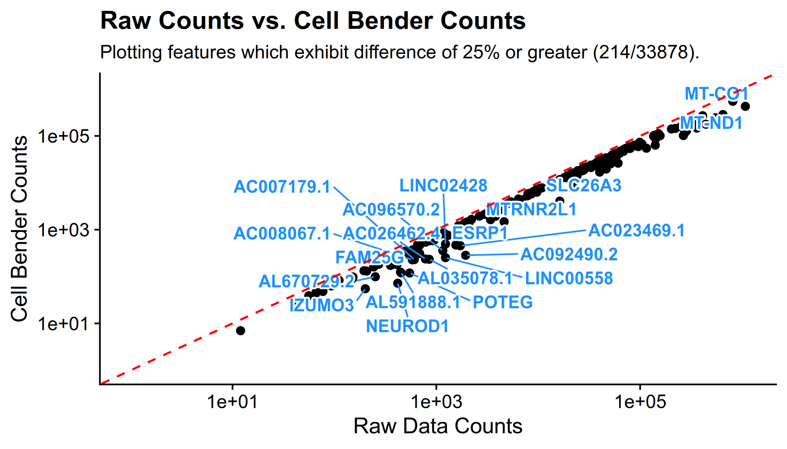
p1 <- VlnPlot(DCM_RV_preQC, features = "nCount_RNA", group.by = "Sample", pt.size = 0) + theme(axis.title.x = element_blank()) +
NoLegend()
p2 <- VlnPlot(DCM_RV_preQC, features = "nFeature_RNA", group.by = "Sample", pt.size = 0) + theme(axis.title.x = element_blank()) +
NoLegend()
p3 <- VlnPlot(DCM_RV_preQC, features = "percent.mt", group.by = "Sample", pt.size = 0) + theme(axis.title.x = element_blank()) +
NoLegend()
p4 <- VlnPlot(DCM_RV_preQC, features = "percent.rp", group.by = "Sample", pt.size = 0) + theme(axis.title.x = element_blank()) +
NoLegend()
QC_pre_VlnPlots <- p1 + p2 + p3 + p4 + plot_layout(ncol = 2)
QC_pre_VlnPlots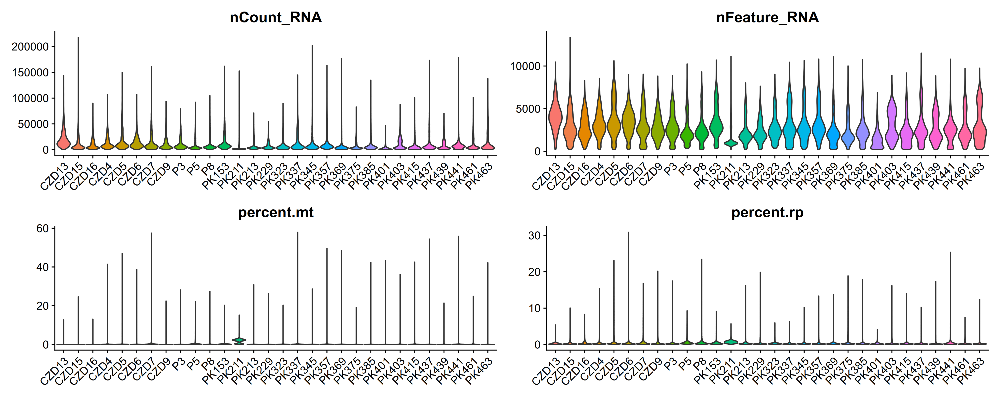
p1 <- VlnPlot(DCM_RV_preQC, features = "nCount_RNA", group.by = "Sample", pt.size = 0, y.max = 20000) + theme(axis.title.x = element_blank()) +
NoLegend()
p2 <- VlnPlot(DCM_RV_preQC, features = "nFeature_RNA", group.by = "Sample", pt.size = 0, y.max = 10000) + theme(axis.title.x = element_blank()) +
NoLegend()
p3 <- VlnPlot(DCM_RV_preQC, features = "percent.mt", group.by = "Sample", pt.size = 0, y.max = 5) + theme(axis.title.x = element_blank()) +
NoLegend()
p4 <- VlnPlot(DCM_RV_preQC, features = "percent.rp", group.by = "Sample", pt.size = 0, y.max = 5) + theme(axis.title.x = element_blank()) +
NoLegend()
QC_pre_VlnPlots_zoom <- p1 + p2 + p3 + p4 + plot_layout(ncol = 2)
QC_pre_VlnPlots_zoom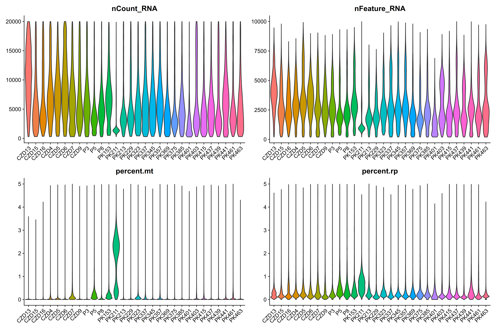
DCM_RV_preQC[["RAW"]] <- NULL
checkpoint <- file.path(input_dir, "doublet_metadata.csv")
if (file.exists(checkpoint)) {
md <- read.csv(checkpoint, row.names = 1)
DCM_RV_preQC <- AddMetaData(DCM_RV_preQC, md[colnames(DCM_RV_preQC), c("scDblFinder.class", "scDblFinder.score")])
} else {
samples <- unique(DCM_RV_preQC$Sample)
for (i in seq_along(samples)) {
a <- subset(DCM_RV_preQC, Sample == samples[i])
set.seed(20240606 + i)
sce <- scDblFinder(as.SingleCellExperiment(a), samples = "Sample", clusters = TRUE, BPPARAM = BiocParallel::SerialParam())
md <- as.data.frame(colData(sce))
DCM_RV_preQC <- AddMetaData(DCM_RV_preQC, md[, c("scDblFinder.class", "scDblFinder.score")])
}
}
nn <- table(DCM_RV_preQC$scDblFinder.class)
DCM_RV_preQC$scDblFinder.n <- factor(ifelse(DCM_RV_preQC$scDblFinder.class == "singlet", paste0("Singlets (n=",
nn["singlet"], ")"), paste0("Doublets (n=", nn["doublet"], ")")), levels = c(paste0("Singlets (n=", nn["singlet"],
")"), paste0("Doublets (n=", nn["doublet"], ")")))
stage_counts <- list(Pre_QC = as.data.frame.matrix(table(DCM_RV_preQC$Sample, DCM_RV_preQC$scDblFinder.class)))p1 <- VlnPlot(DCM_RV_preQC, features = c("nCount_RNA"), split.by = "scDblFinder.n", group.by = "Sample", pt.size = 0,
y.max = 50000) + theme(axis.title.x = element_blank()) + NoLegend()
p2 <- VlnPlot(DCM_RV_preQC, features = c("nFeature_RNA"), split.by = "scDblFinder.n", group.by = "Sample", pt.size = 0,
y.max = 10000) + theme(axis.title.x = element_blank())
QC_pre_Doublets <- p1 + p2 + plot_layout(ncol = 2)
QC_pre_Doublets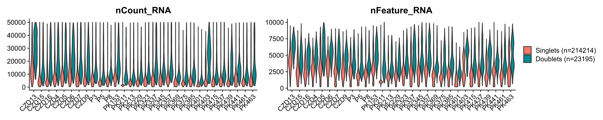
DCM_RV <- subset(x = DCM_RV_preQC, subset = scDblFinder.class == "singlet")
table(DCM_RV@meta.data$scDblFinder.class)
singlet
214214 rm(DCM_RV_preQC)
DCM_RV@assays[["RAW"]] <- NULL
DefaultAssay(DCM_RV) <- "RNA"p1 <- VlnPlot(DCM_RV, features = "nCount_RNA", group.by = "Sample", pt.size = 0) + theme(axis.title.x = element_blank()) +
NoLegend()
p2 <- VlnPlot(DCM_RV, features = "nFeature_RNA", group.by = "Sample", pt.size = 0) + theme(axis.title.x = element_blank()) +
NoLegend()
p3 <- VlnPlot(DCM_RV, features = "percent.mt", group.by = "Sample", pt.size = 0) + theme(axis.title.x = element_blank()) +
NoLegend()
p4 <- VlnPlot(DCM_RV, features = "percent.rp", group.by = "Sample", pt.size = 0) + theme(axis.title.x = element_blank()) +
NoLegend()
QC_pre_no_doublets_VlnPlots <- p1 + p2 + p3 + p4 + plot_layout(ncol = 2)
QC_pre_no_doublets_VlnPlots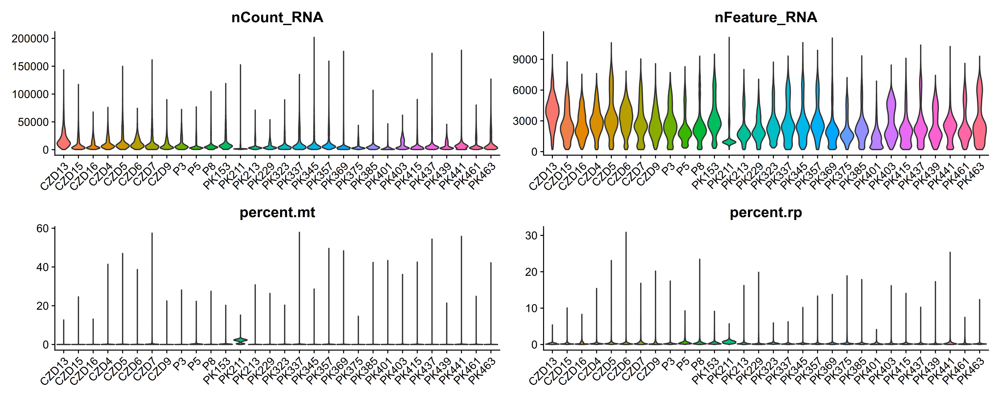
p1 <- VlnPlot(DCM_RV, features = "nCount_RNA", group.by = "Sample", pt.size = 0, y.max = 20000) + theme(axis.title.x = element_blank()) +
NoLegend()
p2 <- VlnPlot(DCM_RV, features = "nFeature_RNA", group.by = "Sample", pt.size = 0, y.max = 10000) + theme(axis.title.x = element_blank()) +
NoLegend()
p3 <- VlnPlot(DCM_RV, features = "percent.mt", group.by = "Sample", pt.size = 0, y.max = 1.5) + theme(axis.title.x = element_blank()) +
NoLegend()
p4 <- VlnPlot(DCM_RV, features = "percent.rp", group.by = "Sample", pt.size = 0, y.max = 1.5) + theme(axis.title.x = element_blank()) +
NoLegend()
QC_pre_no_doublets_VlnPlots_zoom <- p1 + p2 + p3 + p4 + plot_layout(ncol = 2)
QC_pre_no_doublets_VlnPlots_zoom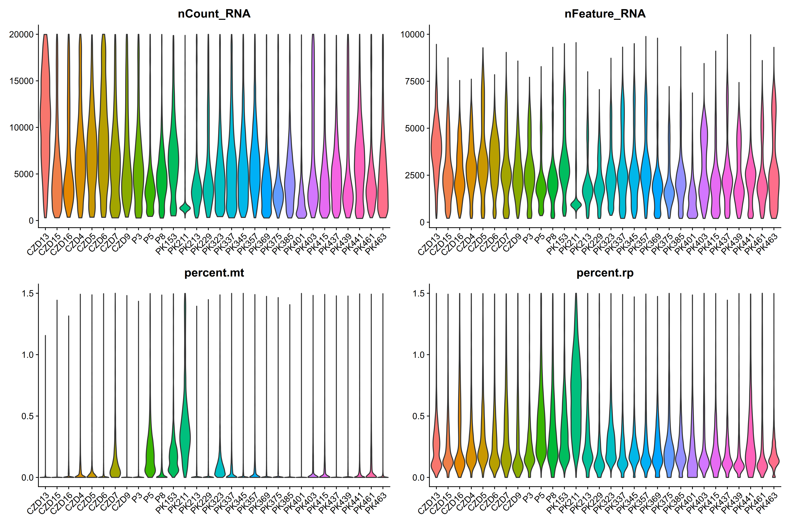
DCM_RV <- subset(DCM_RV, subset = nFeature_RNA > 500 & percent.mt < 1.5 & nCount_RNA > 1000 & nCount_RNA < 1e+05)
table(DCM_RV$Sample)
CZD13 CZD15 CZD16 CZD4 CZD5 CZD6 CZD7 CZD9 P3 P5 P8 PK153 PK211
3283 9737 10578 8352 3308 6510 3757 9404 3832 7284 4365 3028 1033
PK213 PK229 PK323 PK337 PK345 PK357 PK369 PK375 PK385 PK401 PK403 PK415 PK437
7304 4932 8107 6995 6749 7173 8143 8123 8309 4780 7333 5992 7563
PK439 PK441 PK461 PK463
8300 6530 6773 6647 DCM_RV <- subset(DCM_RV, subset = Sample != "PK211")
table(DCM_RV$Sample)
CZD13 CZD15 CZD16 CZD4 CZD5 CZD6 CZD7 CZD9 P3 P5 P8 PK153 PK213
3283 9737 10578 8352 3308 6510 3757 9404 3832 7284 4365 3028 7304
PK229 PK323 PK337 PK345 PK357 PK369 PK375 PK385 PK401 PK403 PK415 PK437 PK439
4932 8107 6995 6749 7173 8143 8123 8309 4780 7333 5992 7563 8300
PK441 PK461 PK463
6530 6773 6647 cell_type_cols <- c("#d05050", "#33A02C", "#1F78B4", "#CAB2D6", "#FF7F00", "#B2DF8A", "#B15928", "#FFD000", "#FA95C0",
"#FDBF6F", "#6A3D9A", "#7aCDF9", "#E6E600")
sample_cols <- DiscretePalette_scCustomize(num_colors = 29, palette = "polychrome", shuffle_pal = TRUE, seed = 220510)
batch_cols <- DiscretePalette_scCustomize(num_colors = 9, palette = "polychrome", shuffle_pal = TRUE, seed = 220510)
cluster_cols <- DiscretePalette_scCustomize(num_colors = 15, palette = "polychrome", shuffle_pal = TRUE, seed = 220510)p1 <- VlnPlot(DCM_RV, features = "nCount_RNA", group.by = "Sample", pt.size = 0) + theme(axis.title.x = element_blank()) +
NoLegend()
p2 <- VlnPlot(DCM_RV, features = "nFeature_RNA", group.by = "Sample", pt.size = 0) + theme(axis.title.x = element_blank()) +
NoLegend()
p3 <- VlnPlot(DCM_RV, features = "percent.mt", group.by = "Sample", pt.size = 0) + theme(axis.title.x = element_blank()) +
NoLegend()
p4 <- VlnPlot(DCM_RV, features = "percent.rp", group.by = "Sample", pt.size = 0) + theme(axis.title.x = element_blank()) +
NoLegend()
QC_post_VlnPlots <- p1 + p2 + p3 + p4 + plot_layout(ncol = 2)
QC_post_VlnPlots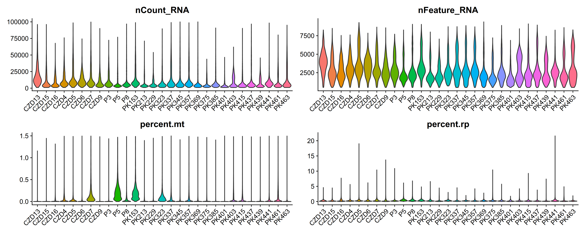
p1 <- VlnPlot(DCM_RV, features = "nCount_RNA", group.by = "Sample", pt.size = 0, y.max = 20000) + theme(axis.title.x = element_blank()) +
NoLegend()
p2 <- VlnPlot(DCM_RV, features = "nFeature_RNA", group.by = "Sample", pt.size = 0, y.max = 10000) + theme(axis.title.x = element_blank()) +
NoLegend()
p3 <- VlnPlot(DCM_RV, features = "percent.mt", group.by = "Sample", pt.size = 0, y.max = 1.5) + theme(axis.title.x = element_blank()) +
NoLegend()
p4 <- VlnPlot(DCM_RV, features = "percent.rp", group.by = "Sample", pt.size = 0, y.max = 1.5) + theme(axis.title.x = element_blank()) +
NoLegend()
QC_post_VlnPlots_zoom <- p1 + p2 + p3 + p4 + plot_layout(ncol = 2)
QC_post_VlnPlots_zoom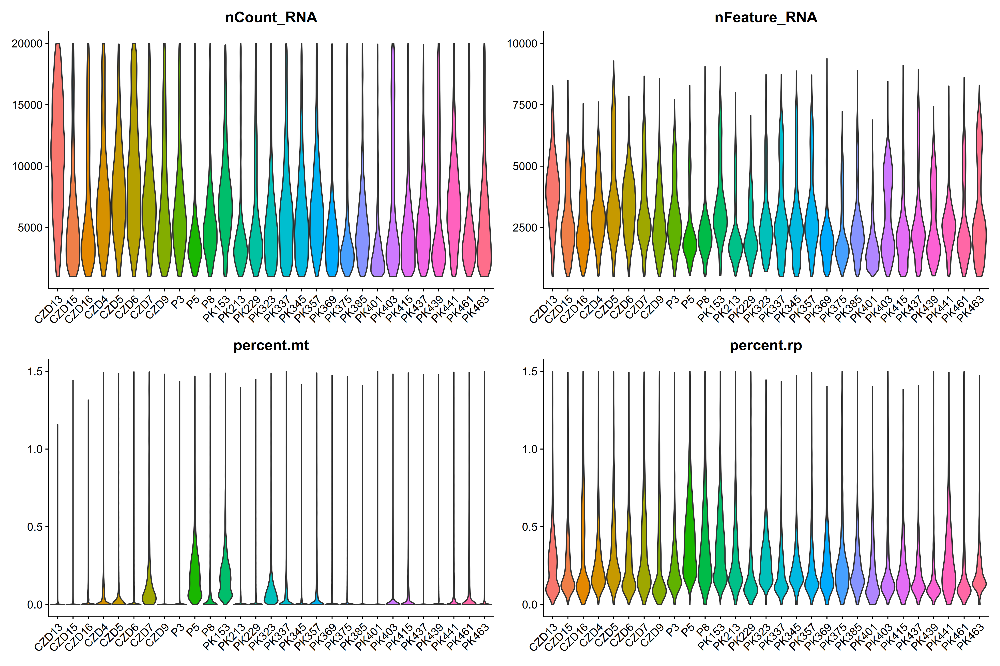
stage_counts$Post_QC <- as.data.frame(table(DCM_RV$Sample))
rm(DCM_RV_preQC)
gc() used (Mb) gc trigger (Mb) max used (Mb)
Ncells 17663488 943.4 30324158 1619.5 30324158 1619.5
Vcells 1700305284 12972.3 4975544824 37960.4 6182462582 47168.5checkpoint <- file.path(input_dir, "not_integrated.qs2")
if (file.exists(checkpoint)) {
DCM_RV <- set_donor_age(qs2::qs_read(checkpoint, nthreads = 2))
} else {
set.seed(20240606)
DCM_RV <- SplitObject(DCM_RV, split.by = "Sample")
DCM_RV <- lapply(DCM_RV, function(x) SCTransform(x, vst.flavor = "v2", vars.to.regress = "percent.mt", return.only.var.genes = TRUE,
method = "glmGamPoi"))
features <- SelectIntegrationFeatures(object.list = DCM_RV, nfeatures = 3000)
DCM_RV <- merge(x = DCM_RV[[1]], y = DCM_RV[2:length(DCM_RV)], merge.data = TRUE)
VariableFeatures(DCM_RV) <- features
DCM_RV <- RunPCA(DCM_RV)
DCM_RV <- RunUMAP(DCM_RV, dims = 1:50)
DCM_RV <- FindNeighbors(DCM_RV, dims = 1:50)
DCM_RV <- FindClusters(DCM_RV, resolution = seq(0.1, 0.8, by = 0.1))
}ElbowPlot(DCM_RV, ndims = 50)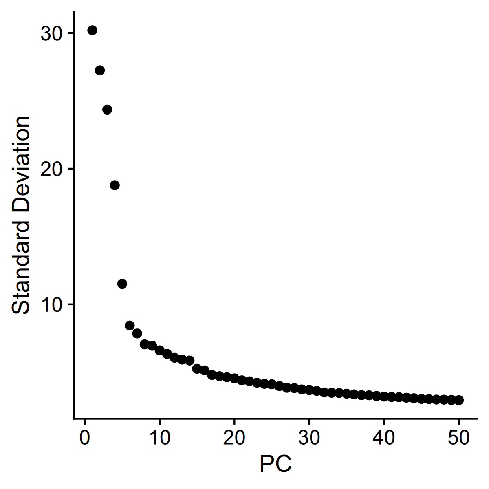
clustree::clustree(DCM_RV@meta.data[, grep("SCT_snn_res", colnames(DCM_RV@meta.data))], prefix = "SCT_snn_res.")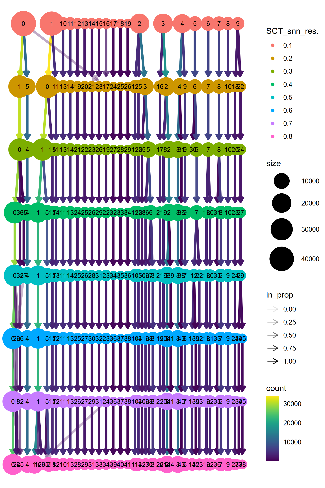
DimPlot(DCM_RV, reduction = "umap", shuffle = T, group.by = c("SCT_snn_res.0.1", "Sample", "Batch_processing",
"Batch_sequencing"), ncol = 2)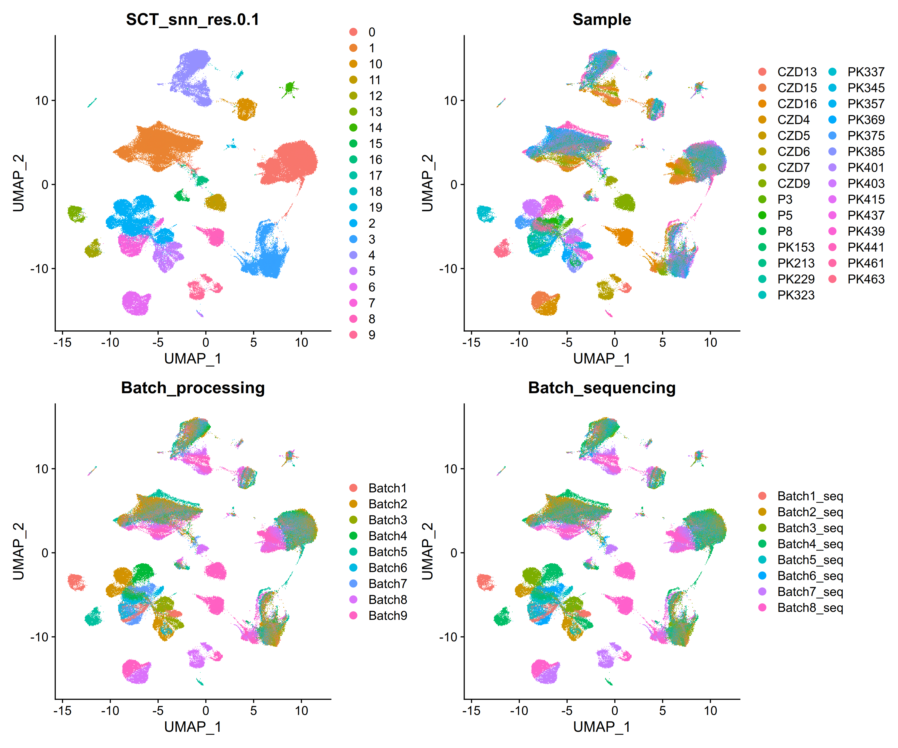
checkpoint <- file.path(input_dir, "initial_integrated.qs2")
if (file.exists(checkpoint)) {
DCM_RV <- set_donor_age(qs2::qs_read(checkpoint, nthreads = 2))
} else {
DCM_RV <- RunHarmony(DCM_RV, assay.use = "SCT", group.by.vars = "Sample", dims.use = 1:50, plot_convergence = TRUE,
.options = harmony_options(max.iter.cluster = 100, ))
DefaultAssay(DCM_RV) <- "SCT"
DCM_RV <- RunUMAP(DCM_RV, dims = 1:50, reduction = "harmony")
DCM_RV <- FindNeighbors(DCM_RV, dims = 1:50, reduction = "harmony")
DCM_RV <- FindClusters(DCM_RV, resolution = seq(0.1, 0.8, by = 0.1))
}clustree::clustree(DCM_RV@meta.data[, grep("SCT_snn_res", colnames(DCM_RV@meta.data))], prefix = "SCT_snn_res.")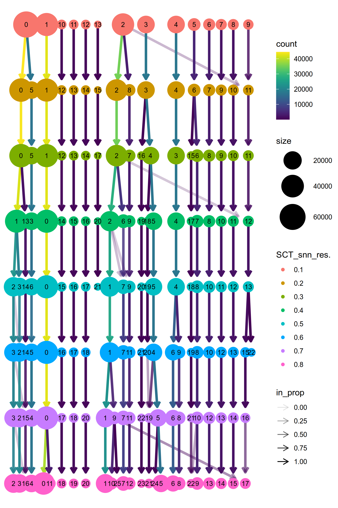
DCM_RV$SCT_snn_res.0.2 <- factor(DCM_RV$SCT_snn_res.0.2, levels = as.character(sort(as.numeric(unique(as.character(DCM_RV$SCT_snn_res.0.2))))))
DimPlot(DCM_RV, reduction = "umap", shuffle = T, group.by = c("SCT_snn_res.0.2", "Sample", "Batch_processing",
"Batch_sequencing"), ncol = 2, label = T)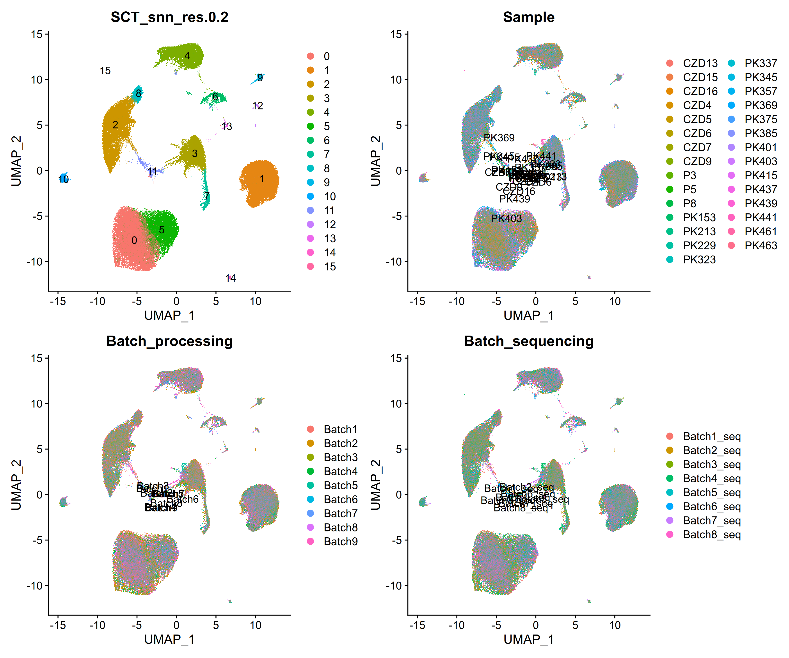
DefaultAssay(DCM_RV) <- "RNA"
DCM_RV <- NormalizeData(DCM_RV)
Idents(DCM_RV) <- "SCT_snn_res.0.2"
checkpoint <- file.path(input_dir, "initial_markers.csv")
Markers <- if (file.exists(checkpoint)) read.csv(checkpoint) else FindAllMarkers(DCM_RV, only.pos = TRUE, min.pct = 0.5,
logfc.threshold = 1)
Markers_top10 <- as.data.frame(Markers %>% group_by(cluster) %>% top_n(n = 10, wt = avg_log2FC))
Markers_top3 <- as.data.frame(Markers %>% group_by(cluster) %>% top_n(n = 3, wt = avg_log2FC))
heatmap_cols <- rev(colorRampPalette(brewer.pal(9, "RdBu"))(256))heatmap_cols <- colorRampPalette(RColorBrewer::brewer.pal(9, "RdBu"))(256)
heatmap_cols <- rev(heatmap_cols[1:256])
Heatmap <- DoHeatmap(subset(DCM_RV, cells = sample(colnames(DCM_RV), 20000)), label = FALSE, draw.line = F, features = Markers_top10$gene,
assay = "SCT") + scale_fill_gradientn(colours = heatmap_cols) + theme(axis.text.y = element_text(size = 5)) +
theme(plot.margin = unit(c(0.1, 0, 0, 0), "inches"))
Heatmap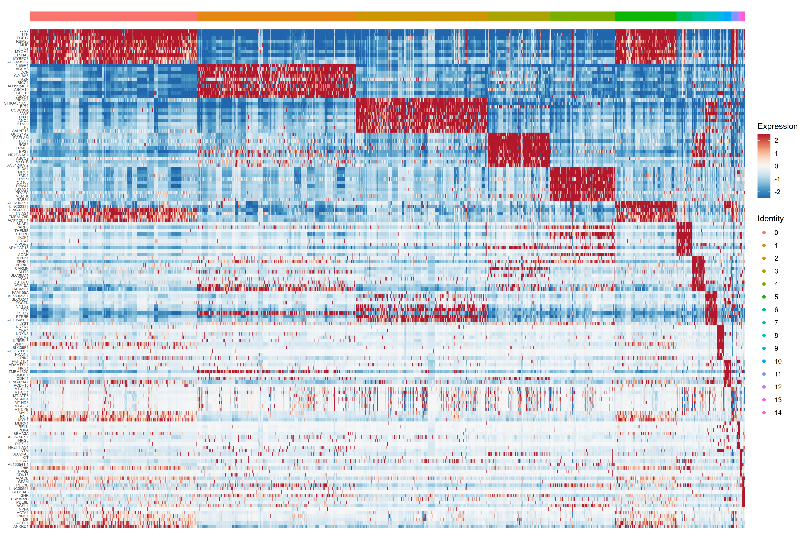
VlnPlot(DCM_RV, features = c("nCount_RNA", "nFeature_RNA", "percent.mt", "percent.rp", "scDblFinder.score"), ncol = 3,
pt.size = 0) + theme(axis.title.x = element_blank())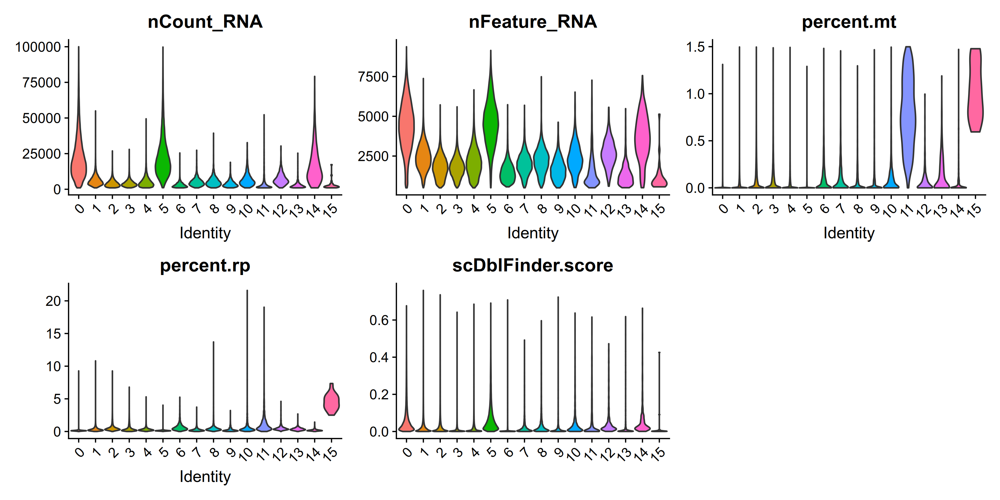
decisions <- read.csv(file.path(input_dir, "initial_cluster_decisions.csv"), colClasses = c(cluster = "character"))
knitr::kable(decisions)| cluster | keep | reason |
|---|---|---|
| 0 | TRUE | Retain: coherent high-complexity cardiac nuclear identity (RYR2/TTN/RBM20/MLIP), low mitochondrial/ribosomal proportions; multiple donors and both groups. |
| 1 | TRUE | Retain: coherent fibroblast extracellular-matrix and nuclear identity (DCN/COL6A3/PDGFRA/NEGR1), adequate complexity; both groups. |
| 2 | TRUE | Retain: coherent vascular endothelial identity (VWF/FLT1/F8/PIK3R3 with PECAM1/EMCN), adequate complexity; both groups. |
| 3 | TRUE | Retain: coherent pericyte identity (RGS5/ABCC9/GUCY1A2/PDGFRB), adequate complexity; both groups. |
| 4 | TRUE | Retain: coherent macrophage identity (F13A1/MRC1/CD163/MERTK), adequate complexity; both groups. MRC1 alone not used. |
| 5 | TRUE | Retain: coherent high-complexity cardiac nuclear identity (RYR2/TTN-AS1/MLIP/FGF12/RBM20), low mitochondrial/ribosomal proportions; both groups. |
| 6 | TRUE | Retain: coherent lymphoid nuclear identity (SKAP1/THEMIS/PTPRC/IKZF1/CD247/ITK), adequate complexity; fine T/NK/B composition left for fresh subclustering. |
| 7 | TRUE | Retain: coherent smooth-muscle identity (MYH11/CARMN/ACTA2/TAGLN), adequate complexity; both groups. |
| 8 | TRUE | Retain: coherent endothelial identity (PTPRB/PECAM1/VWF/EMCN), adequate complexity; not removed for noncanonical subtype signature. |
| 9 | TRUE | Retain: coherent neural identity (NRXN1/NRXN3/CADM2/SOX10/PLP1), adequate complexity; both groups. |
| 10 | TRUE | Retain: coherent PKHD1L1/NPR3/NFATC1 endocardial/endothelial identity, adequate complexity; both groups. |
| 11 | FALSE | Exclude low-quality mixed/mitochondrial profiles: 1591 nuclei; median 1210 detected genes and 2161 UMI, mitochondrial 0.780%; 9 of only14 positive same-threshold markers are mitochondrial genes, other markers cytoplasmic cardiac transcripts. Canonical cardiac, stromal and endothelial signals coexist without coherent nuclear lineage; all29 donors represented including340 HC. Decision uses combined complexity/marker identity, NOT mitochondrial threshold or a historical cluster number. |
| 12 | TRUE | Retain: coherent lymphatic-endothelial identity (MMRN1/CCL21/PROX1/FLT4/PDPN), adequate complexity; both groups. |
| 13 | TRUE | Retain rare mast lineage: coherent KIT/CPA3/IL18R1/TPSB2/TPSAB1 despite median1173 features; low complexity alone is not an exclusion criterion. |
| 14 | TRUE | Retain rare adipocyte lineage: coherent ADIPOQ/PLIN1/GPAM/ACACB; median3666.5 features and low mitochondrial proportion, multiple donors and both groups. |
| 15 | FALSE | Exclude low-quality cardiac cytoplasmic/stressed profiles:30 nuclei, median889.5 genes/2032.5 UMI, mitochondrial1.014% and ribosomal4.595% versus coherent nuclear CM clusters0/5 ~4374-4531 genes, mitochondrial0% and ribosomal~0.12%. NPPA/NPPB/ACTA1/TNNC1/MB stress/sarcomere signature is acknowledged, but RYR2/RBM20 mean raw counts ~8.7/1 versus ~700/60 in nuclear CM; top positive markers heavily oxidative-phosphorylation/ribosomal/cytoplasmic rather than preserved cardiac nuclear identity. PK441-only origin noted but NOT sufficient by itself for exclusion. No biological stress-state conclusion is made. |
checkpoint <- file.path(input_dir, "final_integrated.qs2")
if (file.exists(checkpoint)) {
DCM_RV <- set_donor_age(qs2::qs_read(checkpoint, nthreads = 2))
} else {
cells <- colnames(DCM_RV)[as.character(DCM_RV$SCT_snn_res.0.2) %in% decisions$cluster[as.logical(decisions$keep)]]
DCM_RV <- subset(DCM_RV, cells = cells)
DefaultAssay(DCM_RV) <- "SCT"
DCM_RV <- SplitObject(DCM_RV, split.by = "Sample")
features <- SelectIntegrationFeatures(object.list = DCM_RV, nfeatures = 3000)
DCM_RV <- merge(x = DCM_RV[[1]], y = DCM_RV[2:length(DCM_RV)], merge.data = TRUE)
VariableFeatures(DCM_RV) <- features
DCM_RV <- RunPCA(DCM_RV, npcs = 50)
ElbowPlot(DCM_RV, ndims = 50)
DCM_RV <- RunHarmony(DCM_RV, assay.use = "SCT", group.by.vars = "Sample", dims.use = 1:50, plot_convergence = TRUE,
.options = harmony_options(max.iter.cluster = 100, ))
DefaultAssay(DCM_RV) <- "SCT"
DCM_RV <- RunUMAP(DCM_RV, dims = 1:50, reduction = "harmony")
DCM_RV <- FindNeighbors(DCM_RV, dims = 1:50, reduction = "harmony")
DCM_RV <- FindClusters(DCM_RV, resolution = seq(0.1, 0.8, by = 0.1))
}
DCM_RV$SCT_snn_res.0.2 <- factor(DCM_RV$SCT_snn_res.0.2, levels = as.character(sort(as.numeric(unique(as.character(DCM_RV$SCT_snn_res.0.2))))))clustree::clustree(DCM_RV@meta.data[, grep("SCT_snn_res", colnames(DCM_RV@meta.data))], prefix = "SCT_snn_res.")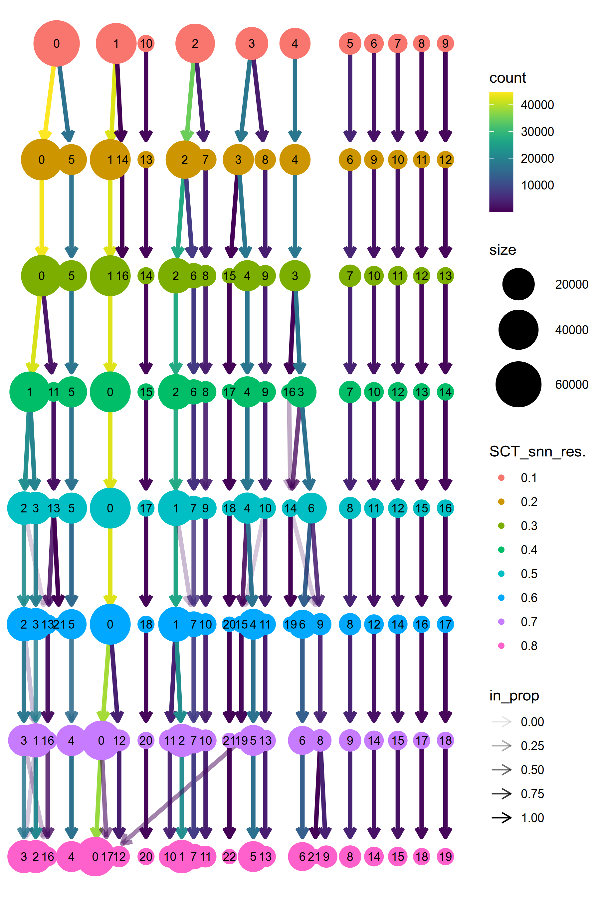
res_names <- sub("SCT_snn_res\\.", "", grep("SCT_snn_res", names(DCM_RV@meta.data), value = TRUE))
clustree_cols <- c("#8F7C00FF", "#5EF1F2FF", "#FFA8BBFF", "#F0A0FFFF", "#FFCC99FF", "#2BCE48FF", "#FFE100FF", "#9DCC00FF")
names(clustree_cols) <- res_names[seq_along(clustree_cols)]
clustree(DCM_RV@meta.data[, grep("SCT_snn_res", names(DCM_RV@meta.data))], prefix = "SCT_snn_res.") + scale_colour_manual(values = clustree_cols,
name = "resolution") + scale_fill_manual(values = clustree_cols, name = "resolution")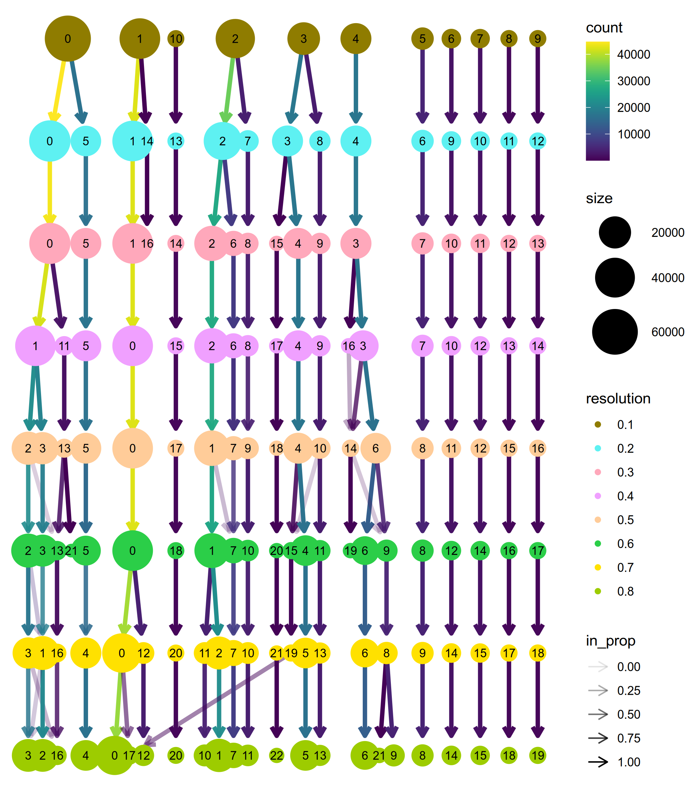
DimPlot(DCM_RV, reduction = "umap", shuffle = T, group.by = c("SCT_snn_res.0.2", "Sample", "Batch_processing",
"Batch_sequencing"), ncol = 2)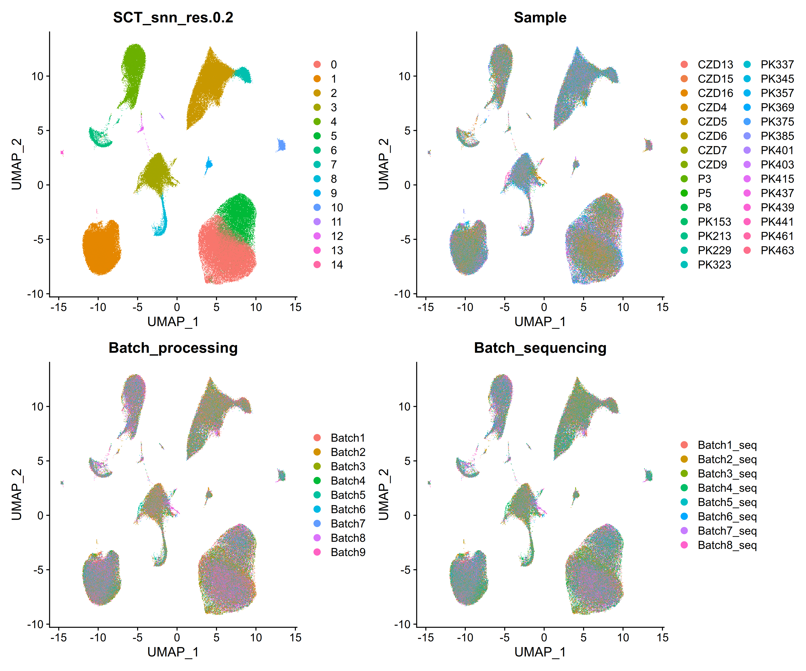
DefaultAssay(DCM_RV) <- "RNA"
DCM_RV <- NormalizeData(DCM_RV)
Idents(DCM_RV) <- "SCT_snn_res.0.2"
checkpoint <- file.path(input_dir, "final_markers.csv")
Markers <- if (file.exists(checkpoint)) read.csv(checkpoint) else FindAllMarkers(DCM_RV, only.pos = TRUE, min.pct = 0.5,
logfc.threshold = 1)
Markers_top10 <- as.data.frame(Markers %>% group_by(cluster) %>% top_n(n = 10, wt = avg_log2FC))
Markers_top3 <- as.data.frame(Markers %>% group_by(cluster) %>% top_n(n = 3, wt = avg_log2FC))
heatmap_cols <- rev(colorRampPalette(brewer.pal(9, "RdBu"))(256))s.genes <- cc.genes$s.genes
g2m.genes <- cc.genes$g2m.genes
DCM_RV <- CellCycleScoring(DCM_RV, s.features = s.genes, g2m.features = g2m.genes)
DimPlot(DCM_RV, reduction = "umap", shuffle = T, group.by = "Phase")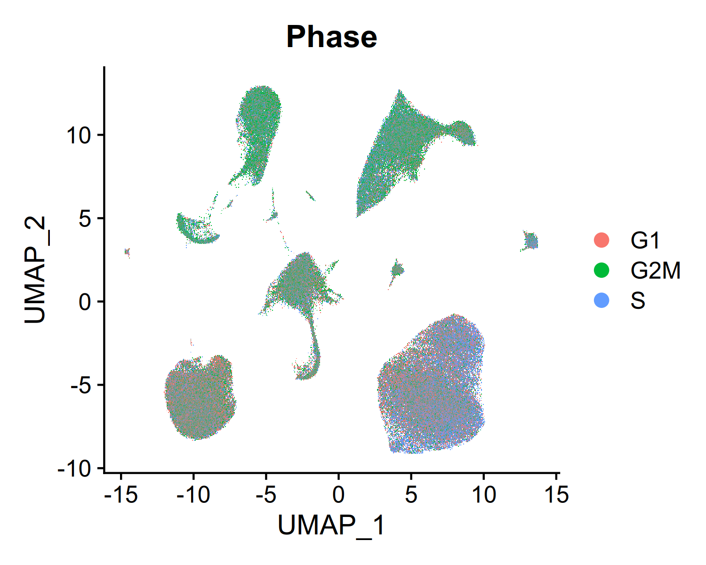
annotation <- read.csv(file.path(input_dir, "annotation_decisions.csv"), colClasses = c(cluster = "character"))
checkpoint <- file.path(input_dir, "annotated.qs2")
if (file.exists(checkpoint)) {
DCM_RV <- set_donor_age(qs2::qs_read(checkpoint, nthreads = 2))
} else {
DCM_RV$cell_type <- factor(annotation$cell_type[match(as.character(DCM_RV$SCT_snn_res.0.2), annotation$cluster)],
levels = unique(annotation$cell_type))
}
fix_label <- function(x) {
x[x %in% c("T lymphocytes", "B lymphocytes")] <- "Lymphocytes"
x
}
DCM_RV$cell_type <- factor(fix_label(as.character(DCM_RV$cell_type)), levels = unique(fix_label(levels(DCM_RV$cell_type))))
Idents(DCM_RV) <- "cell_type"
old_order <- c("Cardiomyocytes", "Fibroblasts", "Endothelial cells", "Pericytes", "Macrophages", "T lymphocytes",
"Smooth muscle cells", "Neuronal cells", "Endocardial cells", "Adipocytes", "Mast cells", "Lymphatic cells",
"B lymphocytes")
base_cols <- setNames(cell_type_cols, old_order)
base_cols["Lymphocytes"] <- base_cols["T lymphocytes"]
extra <- setdiff(levels(DCM_RV$cell_type), names(base_cols))
if (length(extra)) base_cols <- c(base_cols, setNames(DiscretePalette_scCustomize(num_colors = length(extra), palette = "polychrome",
seed = 220510), extra))
cell_type_cols <- unname(base_cols[levels(DCM_RV$cell_type)])
knitr::kable(annotation)| cluster | cell_type | reason |
|---|---|---|
| 0 | Cardiomyocytes | Fresh whole-transcriptome RYR2/RBM20/TTN/MYBPC3/MYOM1 nuclear-contractile enrichment; independent raw canonical markers concordant. |
| 1 | Fibroblasts | Fresh DCN96.5%,COL6A396.3%,PDGFRA79.3%,COL1A2 plus NEGR1/ACSM3/ABCA/FBN1 stromal markers; coherent fibroblast identity across29donors. |
| 2 | Endothelial cells | Fresh FLT197.5%,VWF96.4%,EMCN82.6%,PECAM177.8%,CDH557.5%,PTPRB/ENG/EPAS1/BTNL9 enrichment; coherent vascular endothelium. |
| 3 | Pericytes | Fresh RGS593.8%,ABCC992.4%,PDGFRB83.8%,KCNJ840.4% with GUCY1A2/EGFLAM/NR2F2-AS1; pericyte identity rather than mature MYH11-dominant smooth muscle. |
| 4 | Macrophages | Fresh F13A187.9%,MRC192.3%,CD16393%,MERTK88.6%,CSF1R66.9%,LYVE164.7% plus MS4A6A/MS4A4A/TBXAS1/PTPRC; median7macrophage-panel genes/nucleus. PECAM161.4% alone is not endothelium; VWF/CDH5/EMCN low and no coherent endothelial panel. |
| 5 | Cardiomyocytes | Fresh RYR299.9%,MYBPC399.8%,RBM2099.6%,TNNT299.4%,CASQ294.6% plus TTN/MLIP/FHL2/TRDN/TECRL/MYOM1; second coherent CM cluster, not a separately assumed cell state. |
| 6 | Lymphocytes | Fresh nuclear T-lineage SKAP1(93.6%),BCL11B(74.7%),THEMIS(66.2%),ITK(78.6%) and CD247(81.9%)/PTPRC(95.8%); T-major lymphocyte compartment contains cytotoxic/NK-like and possibly B subsets to resolve afresh in LC subclustering, not declared homogeneous. |
| 7 | Endothelial cells | Fresh VWF98.7%,PECAM193.8%,EMCN80.6%,PTPRB98.4%,LDB299.2%,SLCO2A1/ANO2/TPO/RAMP3/ENTPD1 support endothelial identity; POSTN signal does not override endothelial coherence. |
| 8 | Smooth muscle cells | Fresh MYH1186.9%,ACTA270.5%,TAGLN53.2% with CARMN95.6%,LMOD179.1%,ITGA8/ZFHX3/NTRK3/RGS6; mature contractile mural identity versus pericyte cluster3. |
| 9 | Neuronal cells | Fresh NRXN199.7%,NCAM197.2%,NRXN398.5%,XKR497.9%,CADM297.9%,KIRREL3/GRIK2/NCAM2 and partial PLP1/SOX10/S100B; broad neural compartment retained for original-style annotation, no unsupported neuron-versus-glial subtype claim. |
| 10 | Endocardial cells | Fresh PKHD1L198.1% with NPR360.8%,NFATC154.2% and coherent PECAM187.4%,VWF85%,EMCN87.1%; full markers POSTN/ADAMTSL1/NRG1/SMOC1 support endocardial vascular identity. Distinct from lymphatic11 and mesothelial14 despite shared PKHD1L1. |
| 11 | Lymphatic cells | Fresh MMRN194%,CCL2176.5%,PROX173.4%,FLT469.8%,CDH557.6%,PDPN42.8% and RELN/NRP2/SEMA3A; coherent lymphatic identity across29donors. This is a NEW final cluster11, not the removed initial cluster11. |
| 12 | Mast cells | KIT98.6%,IL18R198.7%,CPA390.9%,full-marker KIT/CPA3/HPGDS/IL1RL1 enrichment; coherent rare low-complexity lineage retained, not removed based on feature count alone. |
| 13 | Adipocytes | ADIPOQ96.1%,PLIN194.7%,PPARG99.4% and GPAM/PDE3B/CIDEA whole-transcriptome support; coherent native adipocyte identity. |
| 14 | Mesothelial cells | 27 nuclei,5 donors(21PK385+2PK437+2PK323+1PK439+1HC_CZD15).ITLN177.8%,WT170.4%,BNC151.9%,PDPN66.7%;MSLN/UPK3B/KRT8/KRT19 co-support,24/27detect>=2and22/27>=3mesothelialgenes.Canonical endothelial/lymphatic identities absent(PECAM1/CDH5/FLT4/MMRN1/CCL210%);PKHD1L1 alone is not endothelial identity.Whole-markers PRG4/LRP2/ITLN1/PKHD1L1 coexist with heat-shock genes; stress acknowledged,median2555features/5684UMI/mt0.309%,retain coherent mesothelial lineage rather than deleting for stress/rare/donor skew.Cardiac RYR2 high but RBM20absent andcontractilecoherenceweak:residualSoupXnative/held-outreviewrequired. |
VlnPlot_scCustom(DCM_RV, features = c("nCount_RNA", "nFeature_RNA", "percent.mt", "percent.rp"), group.by = "Sample",
num_columns = 2, pt.size = 0, colors_use = sample_cols) & theme(axis.title.x = element_blank())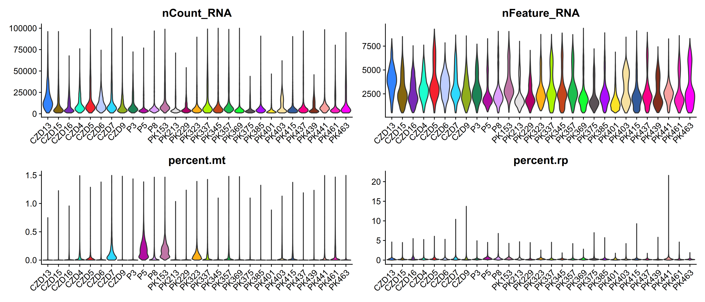
VlnPlot_scCustom(DCM_RV, features = c("nCount_RNA", "nFeature_RNA", "percent.mt", "percent.rp"), group.by = "Batch_processing",
num_columns = 2, pt.size = 0, colors_use = batch_cols) & theme(axis.title.x = element_blank())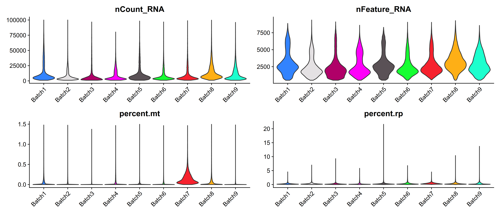
VlnPlot_scCustom(DCM_RV, features = c("nCount_RNA", "nFeature_RNA", "percent.mt", "percent.rp"), group.by = "cell_type",
num_columns = 2, pt.size = 0, colors_use = cell_type_cols) & theme(axis.title.x = element_blank())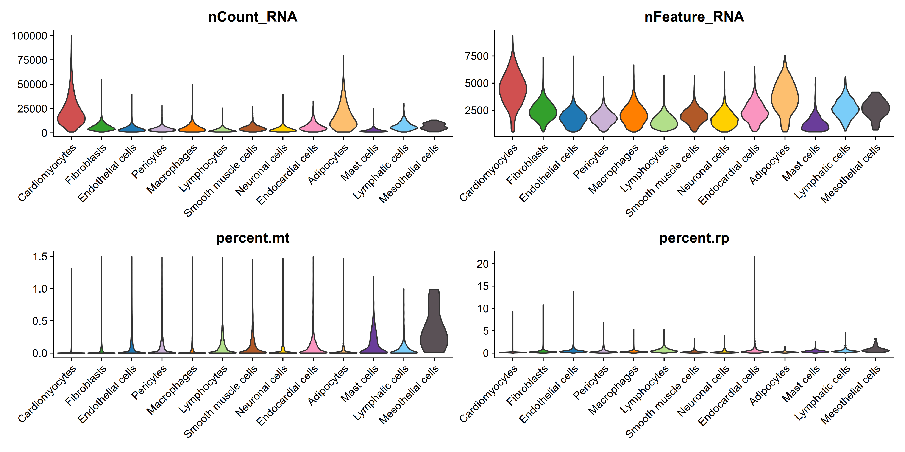
DimPlot_scCustom(DCM_RV, group.by = "SCT_snn_res.0.2", colors_use = cluster_cols)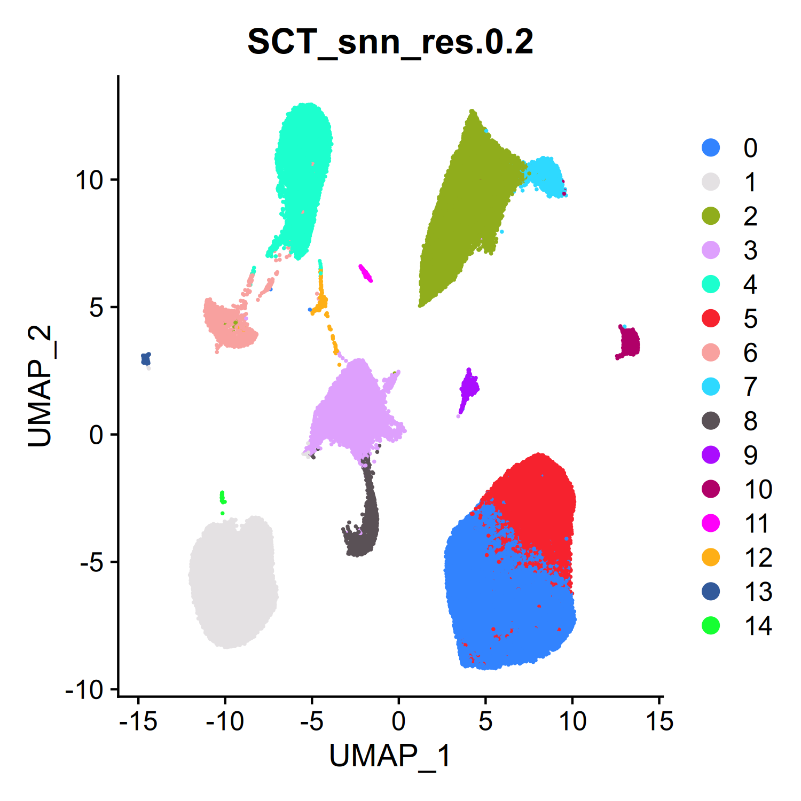
DimPlot_scCustom(DCM_RV, group.by = "Sample", colors_use = sample_cols)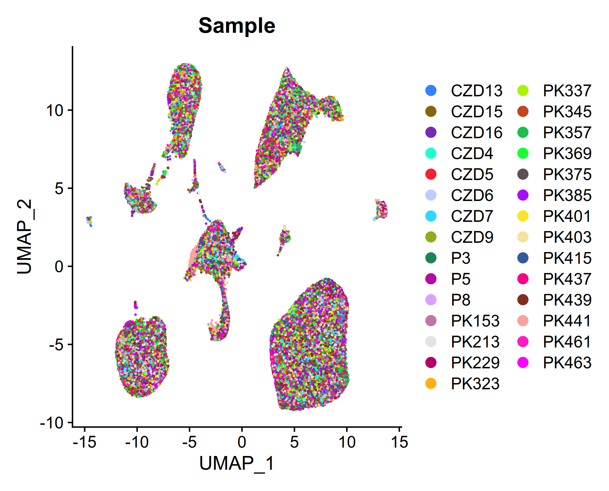
DimPlot_scCustom(DCM_RV, group.by = "Batch_processing", colors_use = batch_cols)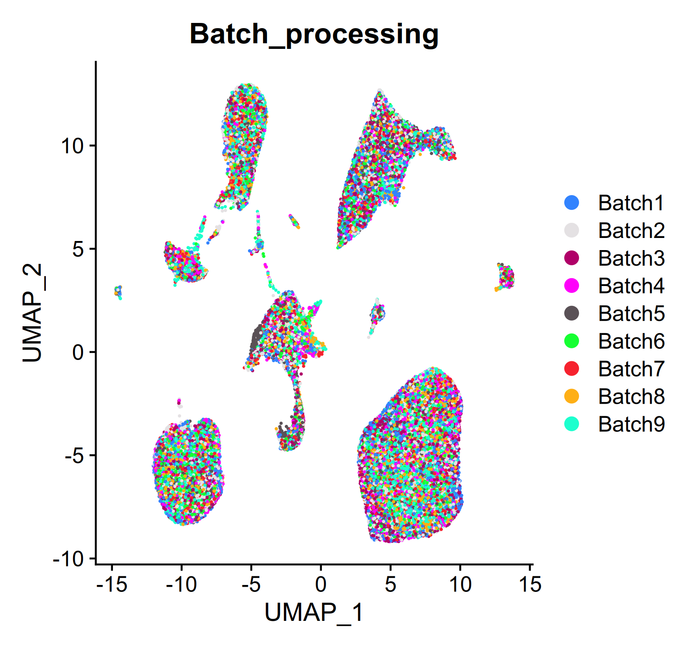
DefaultAssay(DCM_RV) <- "RNA"
DCM_RV <- NormalizeData(DCM_RV)
Idents(DCM_RV) <- "cell_type"
checkpoint <- file.path(input_dir, "cell_type_markers.csv")
Markers <- if (file.exists(checkpoint)) read.csv(checkpoint) else FindAllMarkers(DCM_RV, only.pos = TRUE, min.pct = 0.5,
logfc.threshold = 1)
Markers_top10 <- as.data.frame(Markers %>% group_by(cluster) %>% top_n(n = 10, wt = avg_log2FC))
Markers_top3 <- as.data.frame(Markers %>% group_by(cluster) %>% top_n(n = 3, wt = avg_log2FC))
heatmap_cols <- rev(colorRampPalette(brewer.pal(9, "RdBu"))(256))
Markers$cluster <- fix_label(as.character(Markers$cluster))
Markers_top10 <- as.data.frame(Markers %>% group_by(cluster) %>% top_n(n = 10, wt = avg_log2FC))
Markers_top3 <- as.data.frame(Markers %>% group_by(cluster) %>% top_n(n = 3, wt = avg_log2FC))set.seed(20240606)
genes.use <- intersect(Markers_top10$gene, rownames(DCM_RV[["SCT"]]@scale.data))
DefaultAssay(DCM_RV) <- "SCT"
Heatmap <- DoHeatmap(subset(DCM_RV, cells = sample(colnames(DCM_RV), 10000)), features = genes.use, label = FALSE,
draw.line = TRUE, group.by = "cell_type", group.colors = cell_type_cols, lines.width = 1) + scale_fill_gradientn(colours = heatmap_cols) +
theme(text = element_text(size = 15), axis.text.y = element_text(size = 6))
Heatmap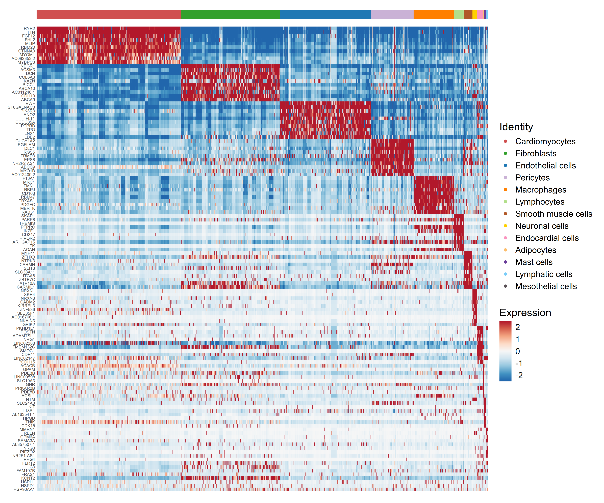
p <- DimPlot(DCM_RV, group.by = "cell_type", reduction = "umap", label = F) + NoLegend() + theme(axis.text = element_text(size = 10,
face = "bold"), axis.title = element_text(size = 14, face = "bold")) + theme(plot.title = element_blank())
LabelClusters(p, id = "cell_type", fontface = "bold", size = 5, repel = T)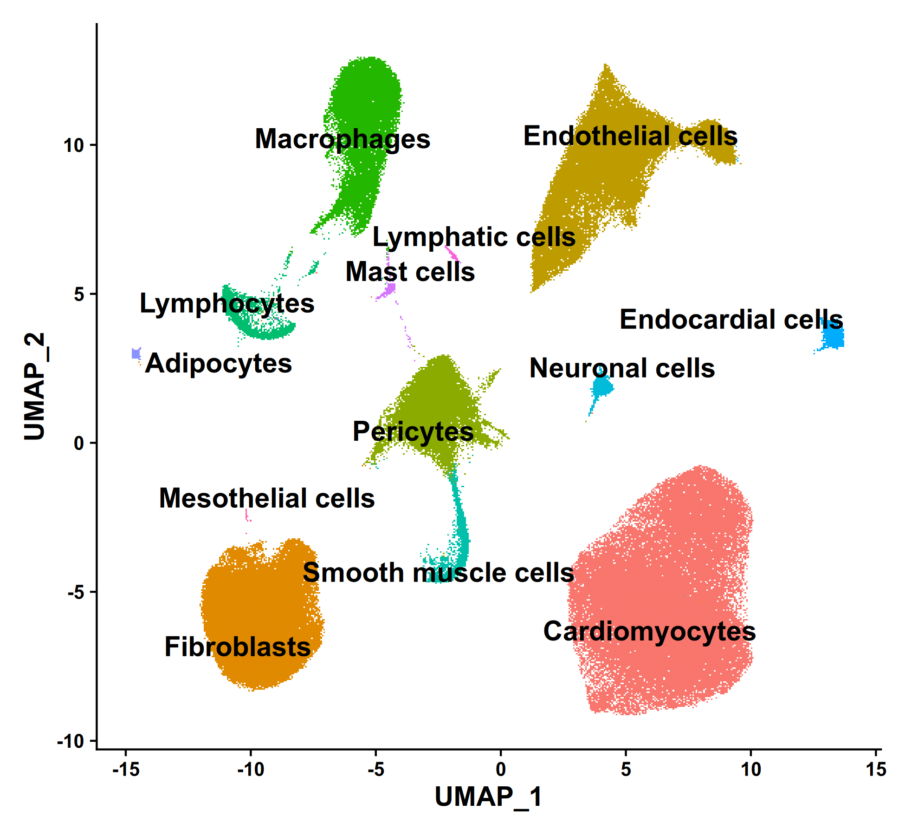
Idents(DCM_RV) <- factor(Idents(DCM_RV), levels = rev(levels(Idents(DCM_RV))))
p <- DotPlot_scCustom(DCM_RV, features = unique(Markers_top3$gene), x_lab_rotate = TRUE)
p + theme(axis.text.x = element_text(size = 12, angle = 60, vjust = 1, hjust = 1), axis.text.y = element_text(size = 15))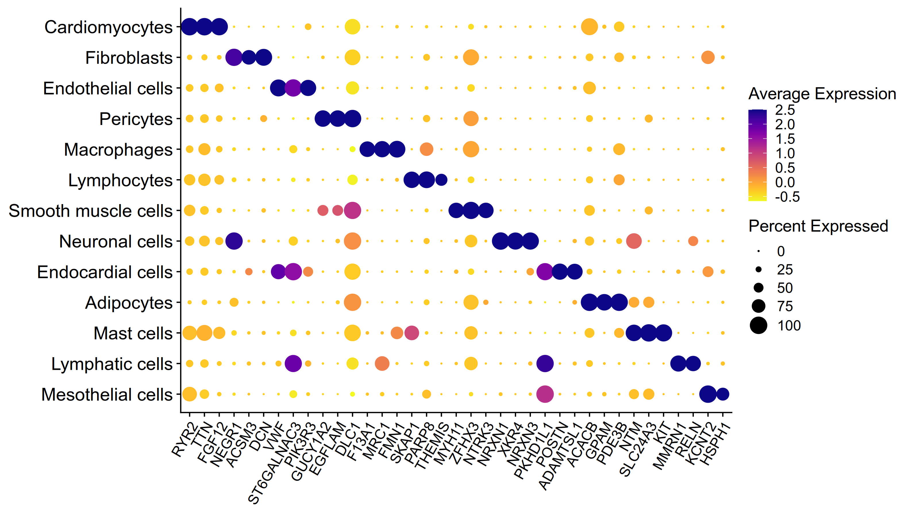
FeaturePlot_scCustom(DCM_RV, features = c("RYR2", "COL6A3", "VWF", "RGS5", "MRC1", "PTPRC", "RGS6", "NRXN1", "PKHD1L1",
"ADIPOQ", "IL18R1", "MMRN1", "POU2AF1"), num_columns = 5, order = F)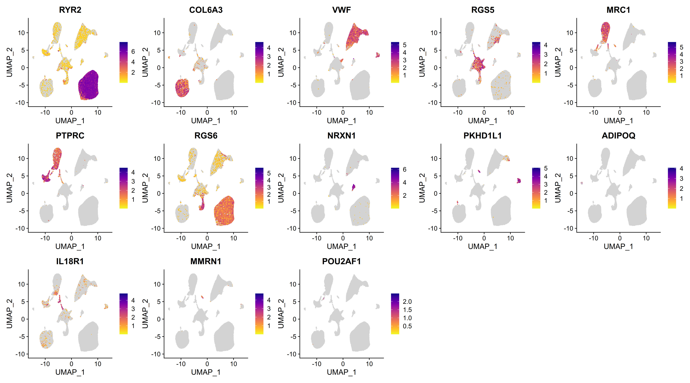
props <- getTransformedProps(DCM_RV$cell_type, DCM_RV$Sample, transform = "logit")
par(mar = c(7, 5, 1, 20), xpd = TRUE)
barplot(props$Proportions, legend = FALSE, ylab = "Proportions", col = cell_type_cols, cex.names = 1.8, las = 2,
font.lab = 2, font.axis = 2, cex.axis = 1.2, cex.lab = 2)
legend("topright", inset = c(-0.375, -0.065), legend = rownames(props$Proportions), fill = cell_type_cols, bty = "n",
cex = 2)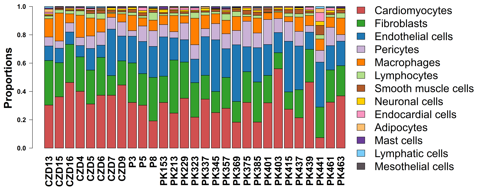
props <- getTransformedProps(DCM_RV$Sample, DCM_RV$cell_type, transform = "logit")
par(mar = c(13, 5, 1, 14), xpd = TRUE)
barplot(props$Proportions, legend = FALSE, ylab = "Proportions", col = sample_cols, cex.names = 1.4, las = 2, font.lab = 2,
font.axis = 2, cex.axis = 1, cex.lab = 1.4)
legend("topright", inset = c(-0.31, -0.065), legend = rownames(props$Proportions), fill = sample_cols, bty = "n",
cex = 1.4, ncol = 2)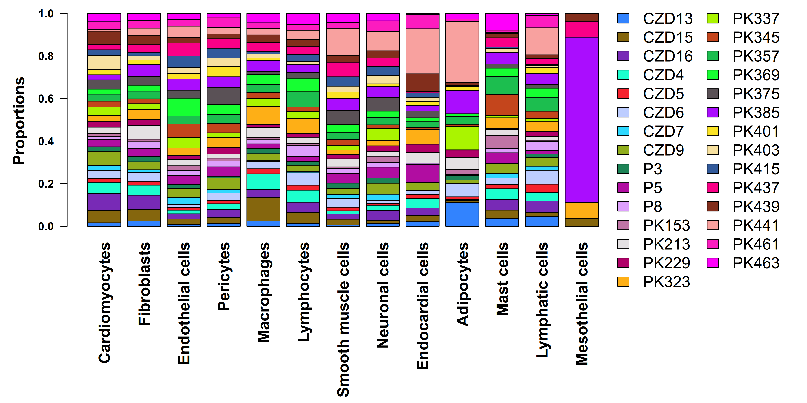
positions <- read.csv(file.path(input_dir, "UMAP_label_positions.csv"))
positions$cell_type <- fix_label(positions$cell_type)
set.seed(20240606)
DimPlot(DCM_RV, group.by = "cell_type", reduction = "umap", cols = cell_type_cols, label = FALSE, shuffle = TRUE,
pt.size = 1.2) + NoLegend() + theme(axis.text = element_text(size = 8, face = "bold"), axis.title = element_text(size = 12,
face = "bold"), plot.title = element_blank()) + geom_text(data = positions, aes(x = x, y = y, label = cell_type),
inherit.aes = FALSE, fontface = "bold", family = "Arial", size = 5.8)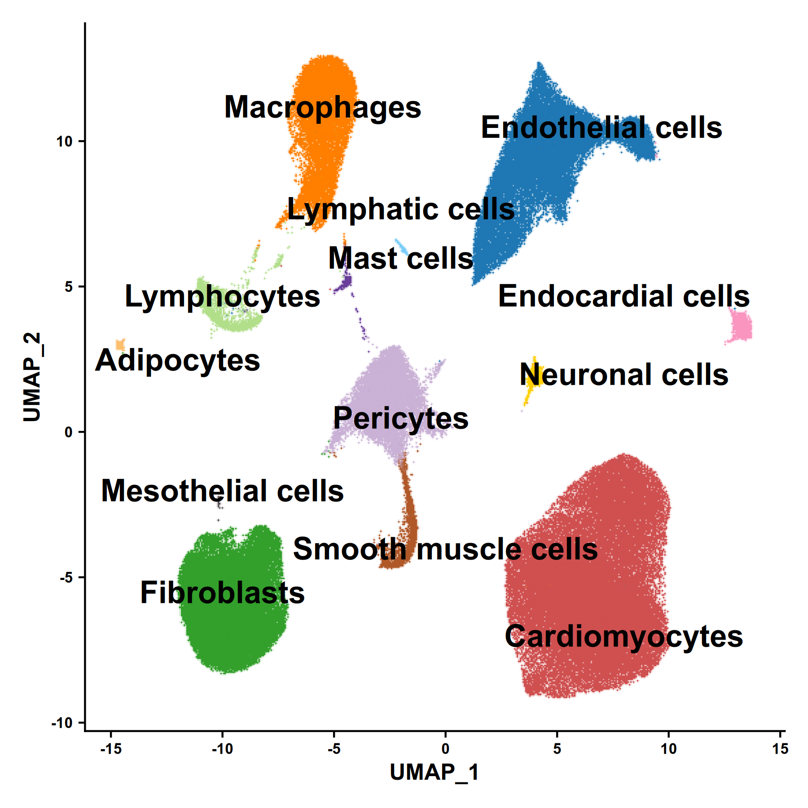
counts <- as.data.frame.matrix(table(DCM_RV$cell_type, DCM_RV$Sample))
final <- set_donor_age(qs2::qs_read(here::here("data", "processed", "RV_cell_states_RNA.qs2"), nthreads = 2))
final_counts <- as.data.frame.matrix(table(final$cell_type, final$Sample))
tables <- list(Cell_type_markers = Markers, Cell_counts_broad = rownames_to_column(counts, "Cell_type"), Cell_counts_final = rownames_to_column(final_counts,
"Cell_type"), Cluster_curation = decisions, Annotation = annotation, Pre_QC = rownames_to_column(stage_counts$Pre_QC,
"Sample"), Post_QC = stage_counts$Post_QC)
writexl::write_xlsx(tables, here::here("output", "Datasets", "Dataset_EV2.xlsx"), format_headers = FALSE)
saveRDS(tables, file.path(output_dir_data, "QC_results_for_EV2.rds"))
sessionInfo()R version 4.5.2 (2025-10-31)
Platform: x86_64-pc-linux-gnu
Running under: Ubuntu 24.04.3 LTS
Matrix products: default
BLAS: /usr/lib/x86_64-linux-gnu/openblas-pthread/libblas.so.3
LAPACK: /usr/lib/x86_64-linux-gnu/openblas-pthread/libopenblasp-r0.3.26.so; LAPACK version 3.12.0
locale:
[1] LC_CTYPE=en_US.UTF-8 LC_NUMERIC=C
[3] LC_TIME=en_US.UTF-8 LC_COLLATE=en_US.UTF-8
[5] LC_MONETARY=en_US.UTF-8 LC_MESSAGES=en_US.UTF-8
[7] LC_PAPER=en_US.UTF-8 LC_NAME=C
[9] LC_ADDRESS=C LC_TELEPHONE=C
[11] LC_MEASUREMENT=en_US.UTF-8 LC_IDENTIFICATION=C
time zone: Etc/UTC
tzcode source: system (glibc)
attached base packages:
[1] stats4 stats graphics grDevices utils datasets methods
[8] base
other attached packages:
[1] speckle_1.10.0 gridExtra_2.3
[3] RColorBrewer_1.1-3 readr_2.1.6
[5] readxl_1.4.5 scDblFinder_1.24.0
[7] SingleCellExperiment_1.32.0 SummarizedExperiment_1.40.0
[9] Biobase_2.70.0 GenomicRanges_1.62.0
[11] Seqinfo_1.0.0 IRanges_2.44.0
[13] S4Vectors_0.48.0 BiocGenerics_0.56.0
[15] generics_0.1.4 MatrixGenerics_1.22.0
[17] matrixStats_1.5.0 harmony_1.2.4
[19] Rcpp_1.1.0 clustree_0.5.1
[21] ggraph_2.2.2 patchwork_1.3.2
[23] ggplot2_4.0.1 Matrix_1.6-5
[25] tibble_3.3.0 tidyr_1.3.2
[27] dplyr_1.2.1 scCustomize_3.2.2
[29] qs2_0.1.7 SeuratObject_5.0.2
[31] Seurat_4.4.0 here_1.0.2
loaded via a namespace (and not attached):
[1] fs_2.1.0 spatstat.sparse_3.1-0 bitops_1.0-9
[4] lubridate_1.9.4 httr_1.4.7 backports_1.5.0
[7] tools_4.5.2 sctransform_0.4.2 utf8_1.2.6
[10] R6_2.6.1 lazyeval_0.2.2 uwot_0.2.4
[13] withr_3.0.2 sp_2.2-0 progressr_0.18.0
[16] cli_3.6.6 spatstat.explore_3.6-0 prismatic_1.1.2
[19] labeling_0.4.3 sass_0.4.10 S7_0.2.1
[22] spatstat.data_3.1-9 ggridges_0.5.7 pbapply_1.7-4
[25] Rsamtools_2.26.0 scater_1.38.0 parallelly_1.45.1
[28] limma_3.66.0 shape_1.4.6.1 BiocIO_1.20.0
[31] ica_1.0-3 spatstat.random_3.4-3 ggbeeswarm_0.7.3
[34] abind_1.4-8 lifecycle_1.0.5 whisker_0.4.1
[37] yaml_2.3.11 edgeR_4.8.0 snakecase_0.11.1
[40] SparseArray_1.10.4 Rtsne_0.17 paletteer_1.6.0
[43] grid_4.5.2 promises_1.5.0 dqrng_0.4.1
[46] crayon_1.5.3 miniUI_0.1.2 lattice_0.22-7
[49] beachmat_2.26.0 cowplot_1.2.0 cigarillo_1.0.0
[52] metapod_1.18.0 pillar_1.11.1 knitr_1.50
[55] rjson_0.2.23 xgboost_3.1.2.1 future.apply_1.20.0
[58] codetools_0.2-20 leiden_0.4.3.1 glue_1.8.0
[61] spatstat.univar_3.1-5 data.table_1.17.8 vctrs_0.7.3
[64] png_0.1-8 spam_2.11-1 cellranger_1.1.0
[67] gtable_0.3.6 rematch2_2.1.2 cachem_1.1.0
[70] xfun_0.56 S4Arrays_1.10.1 mime_0.13
[73] tidygraph_1.3.1 survival_3.8-3 statmod_1.5.1
[76] bluster_1.20.0 fitdistrplus_1.2-4 ROCR_1.0-11
[79] nlme_3.1-168 RcppAnnoy_0.0.22 GenomeInfoDb_1.46.1
[82] rprojroot_2.1.1 bslib_0.9.0 irlba_2.3.5.1
[85] vipor_0.4.7 KernSmooth_2.23-26 otel_0.2.0
[88] colorspace_2.1-2 ggrastr_1.0.2 tidyselect_1.2.1
[91] compiler_4.5.2 curl_7.0.0 git2r_0.36.2
[94] BiocNeighbors_2.4.0 DelayedArray_0.36.0 plotly_4.11.0
[97] stringfish_0.18.0 rtracklayer_1.70.0 checkmate_2.3.3
[100] scales_1.4.0 lmtest_0.9-40 stringr_1.6.0
[103] digest_0.6.39 goftest_1.2-3 spatstat.utils_3.2-0
[106] rmarkdown_2.30 XVector_0.50.0 htmltools_0.5.9
[109] pkgconfig_2.0.3 fastmap_1.2.0 rlang_1.2.0
[112] GlobalOptions_0.1.3 htmlwidgets_1.6.4 UCSC.utils_1.6.0
[115] shiny_1.12.0 farver_2.1.2 jquerylib_0.1.4
[118] zoo_1.8-14 jsonlite_2.0.0 BiocParallel_1.44.0
[121] BiocSingular_1.26.1 RCurl_1.98-1.17 magrittr_2.0.4
[124] scuttle_1.20.0 dotCall64_1.2 viridis_0.6.5
[127] reticulate_1.44.1 stringi_1.8.7 MASS_7.3-65
[130] plyr_1.8.9 parallel_4.5.2 listenv_0.10.0
[133] ggrepel_0.9.6 forcats_1.0.1 deldir_2.0-4
[136] Biostrings_2.78.0 graphlayouts_1.2.2 splines_4.5.2
[139] tensor_1.5.1 hms_1.1.4 circlize_0.4.16
[142] locfit_1.5-9.12 igraph_2.2.1 spatstat.geom_3.6-1
[145] reshape2_1.4.5 ScaledMatrix_1.18.0 XML_3.99-0.20
[148] evaluate_1.0.5 RcppParallel_5.1.11-1 scran_1.38.0
[151] ggprism_1.0.7 tzdb_0.5.0 tweenr_2.0.3
[154] httpuv_1.6.16 RANN_2.6.2 purrr_1.2.0
[157] polyclip_1.10-7 future_1.68.0 scattermore_1.2
[160] ggforce_0.5.0 rsvd_1.0.5 janitor_2.2.1
[163] xtable_1.8-4 restfulr_0.0.16 later_1.4.4
[166] viridisLite_0.4.2 memoise_2.0.1 beeswarm_0.4.0
[169] GenomicAlignments_1.46.0 writexl_2.0.0 cluster_2.1.8.3
[172] workflowr_1.7.2 timechange_0.3.0 globals_0.18.0